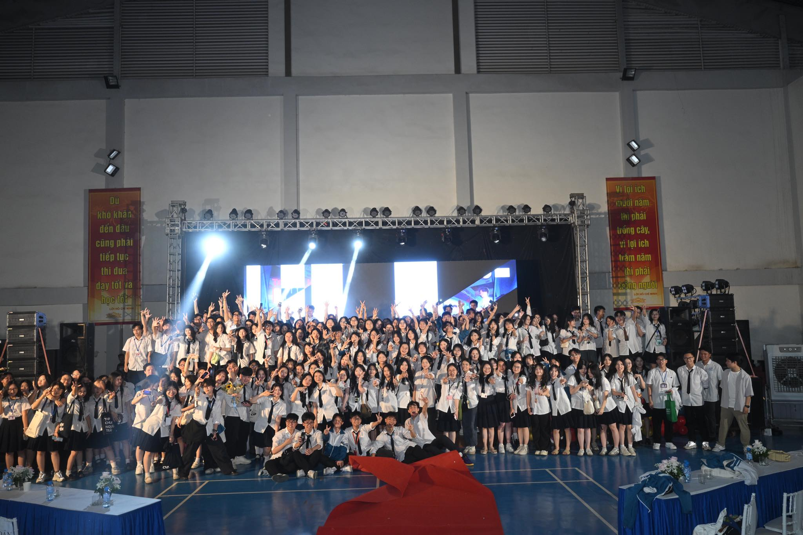

Series of Event: Appreciation and Graduation Ceremony of Nguyen Trai
High School for Gifted Students 2025 “Trạm ký ức: Nhật Hạ”
- Head of Event Department -
Trạm ký ức: Nhật Hạ” is an annual ceremony held to express our deepest gratitude to teachers
and parents, and to celebrate their growth, memories, and the bonds that Class of 2025 has
built before stepping into a new chapter.

As part of the annual Appreciation and Graduation Ceremony "Trạm ký ức: Nhật Hạ", I was the monitor of the organizing team and created a heartfelt series of activities to honor the people who have shaped our high school journey.
To express our gratitude to teachers, we hand-crafted paper flowers for every teacher in the school, each accompanied by a photo and a personal message from students. These small tokens symbolized our sincere appreciation for their unwavering guidance throughout the past three years.
For parents, we organized a letter-writing campaign on the day of the final parent-teacher meeting. All senior students were encouraged to write heartfelt letters to their parents — and 100% of them participated. We also prepared envelopes, paper, and pens so that parents could, in turn, write messages of encouragement to their children as they approached the national university entrance exams. To complement this, we curated a small-scale emotional exhibition showcasing anonymous quotes, letters, and photos capturing the quiet yet powerful love between families — a space that sparked tears, smiles, and moments of shared reflection
We also launched “Friendship Week” — a spirited celebration of student life and camaraderie. I organized a series of engaging activities including:
yearbook photoshoot , cheer performances, a school-wide parade , house flag releases , water balloon fights, and even an “Anti-Backpack Day and a note board for everyone to write down their thoughts and emotions about their high school journey
And at the heart of it all was the main celebration night — a deeply emotional gathering that brought together the entire teaching staff, over 600 parents, and more than 1,200 students of Nguyen Trai High School for the Gifted. As I stood there witnessing it all — the pride in teachers’ eyes, the tears of parents, the radiant smiles and the loud cheering of friends — I felt an overwhelming sense of belonging and purpose, knowing I made something truly unforgettable and I’m so proud of it.